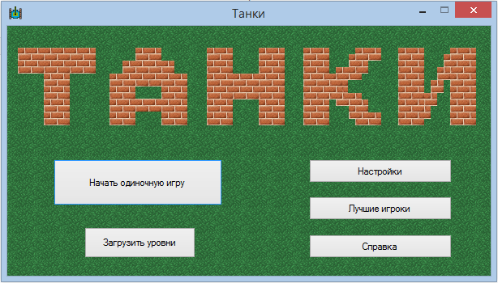
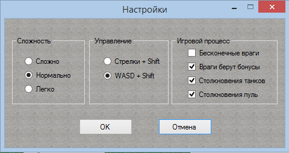
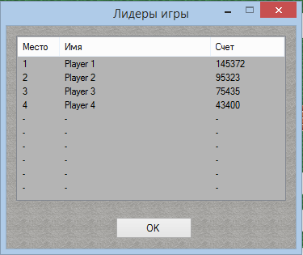
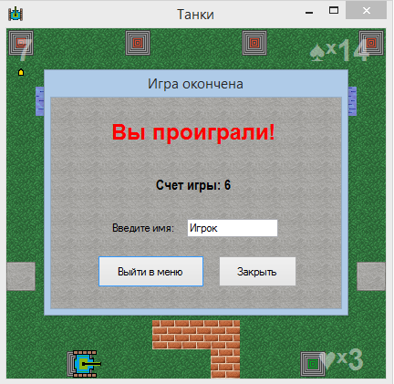
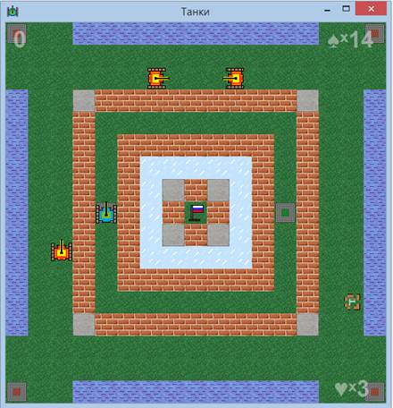
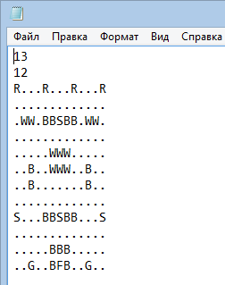

После запуска исполняемого файлы игры открывается главное меню.

Управление осуществляется путем нажатия мыши на соответствующие кнопки.
· Пункт «начать одиночную игру» запускает последовательность встроенных уровней
· Пункт «загрузить уровни» позволяет загрузить один или несколько уровней, составленных в специальном формате в виде txt файлов
· Пункт «настройки» предоставляет доступ к настройкам игры
· Пункт лучшие игроки отображает таблицу игроков, набравших максимальное количество очков по результатам одиночной игры
· Пункт справка отображает данное руководство

Окно настроек содержит следующие параметры:
· Уровень сложности – влияет на характеристики танка игрока и интеллект компьютерных противников
· Управление - позволяет выбрать набор клавиш управления
· Бесконечные враги – делает врагов бесконечными, может быть полезно для тренировки выживаемости
· Враги берут бонусы – если выбрана данная настройка компьютерные противники будут стремиться собирать бонусы, увеличивающие их характеристики и оказывающие негативный эффект на игрока.
· Столкновения танков – отключение данной опции позволяет проходить танкам сквозь друг друга, это полезно на тесных картах, но меняет игровой баланс
· Столкновения пуль – при включенной опции пули пролетают друг сквозь друга, иначе взаимоуничтожаются, не влияет на союзные пули
Таблица лидеров и игровые очки
Таблица показывает 10 игроков в порядке убывания, набравших наибольшее количество очков при прохождении одиночной игры.

Правила начисления очков:
· Попадание в стену – 1
· Попадание в танк – 10
· Уничтожение танка – 100
· Получение бонуса – 25
· Переход на новый уровень – 10000
Запись в таблицу лидеров происходит по окончанию игры вне зависимости от исхода.

Игровое поле содержит следующие элементы интерфейса:
· Счет – в левом верхнем углу
· Количество жизней врага – в правом верхнем углу
· Количество жизней игрока – в левом нижнем углу
Игровое поле может быть растянуто под нужный размер экрана.
Общие основы игры: управление танком осуществляется на заданные кнопки клавиатуры. Для прохождения уровня необходимо уничтожить все красные танки врага, при этом необходимо защитить флаг и не погибнуть самому, в противном случае игра заканчивается.

На поле могут встретиться следующие игровые объекты:
· Пуля – летит в одном направлении до препятствия, наносит урон
· Зеленый флаг – его необходимо защищать игроку
· Красный и зеленый спаун – места где появляются новые танки
· Зеленый танк – танк игрока
· Красный танк – танк врага
· Блоки:
o Блок травы – не создает препятствий для перемещения танка
o Кирпичная стена – блокирует перемещение и пули, может быть легко разрушен
o Каменная стена – блокирует перемещение и пули, разрушается гораздо труднее
o Вода – блокирует перемещение танка, но свободно пропускает пули
o Лед – затрудняет перемещение благодаря эффекту скольжения
· Бонусы:
o Бонус жизней – в зависимости от уровня сложности добавляет жизнь и восстанавливает здоровье танка
o Бонус скорости – ускоряет в 2 раза танк
o Бонус огневой мощности – усиливает урон от пуль в 2 раза
o Бонус скорости стрельбы – ускоряет стрельбу в 2 раза
o Бонус скорости пуль – ускоряет полет пуль в 2 раза
o Бонус защиты флага – восстанавливает стены вокруг флага, либо разрушает их при подборе врагом
В зависимости от настроек игры бонусы дают разный эффект, танки и блоки имеют разную прочность, пули наносят разный урон. Также от уровня сложности зависит поведение компьютерных соперников: чем он выше, тем более навязчиво враги будут пытаться уничтожить игрока и флаг.
Новые уровни для игры могут быть легко созданы в любом текстовом редакторе.
Для этого создается обыкновенный текстовый документ, в первой строке которого пишется количество блоков на игровом поле по координате Х, на второй строке – по координате У.
Затем следует У строчек символов длиной Х, где
· . (точка) – трава
· B – кирпичная стена
· S – каменная стена
· W - вода
· I - лед
· R – красный спаун
· G – зеленый спаун
· F - флаг
